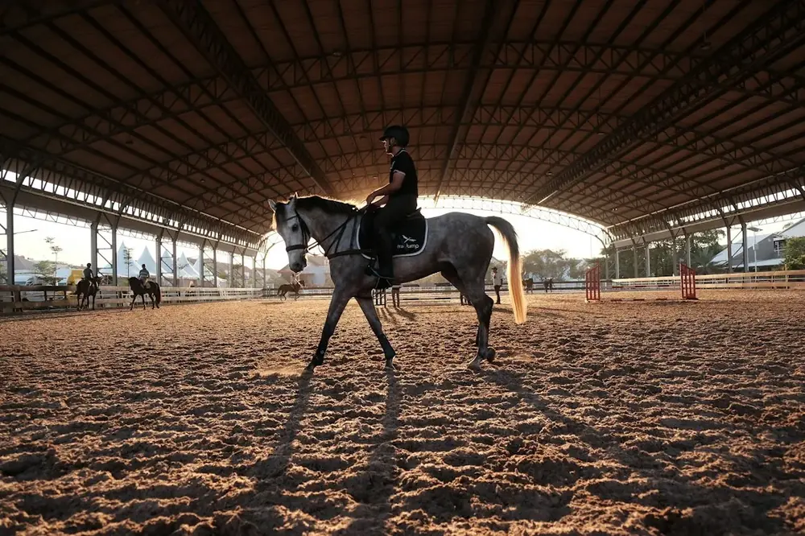
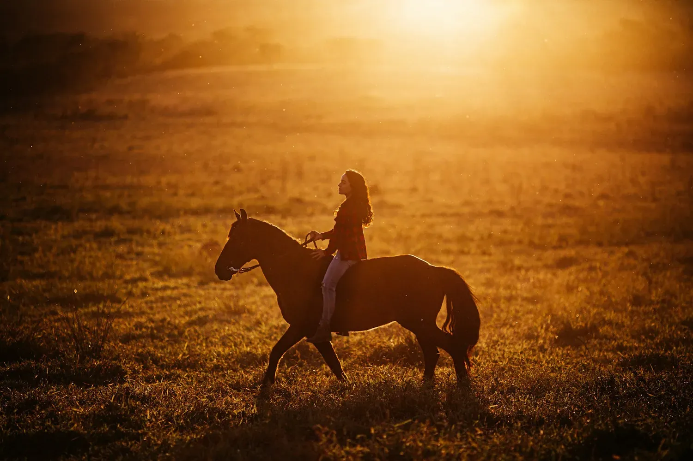
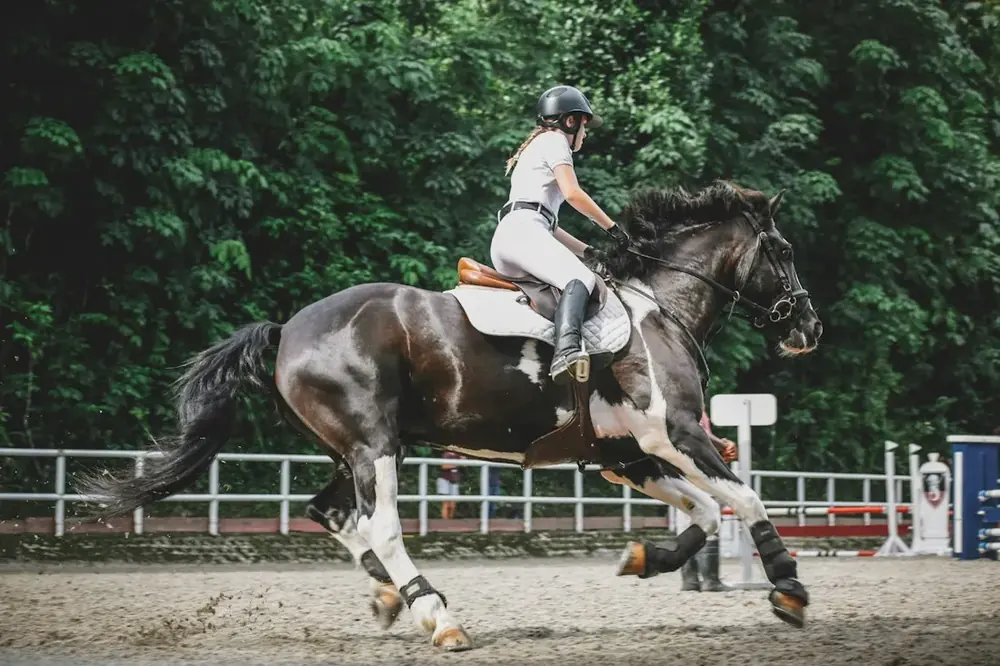
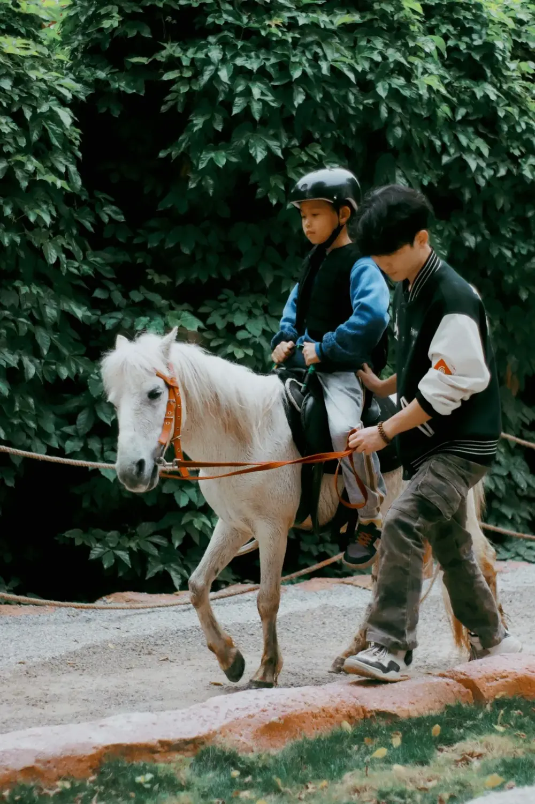
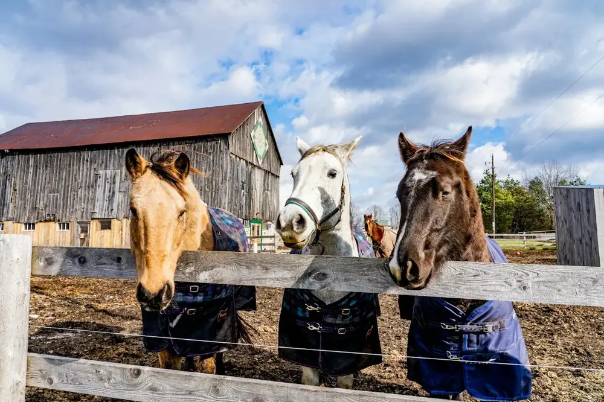
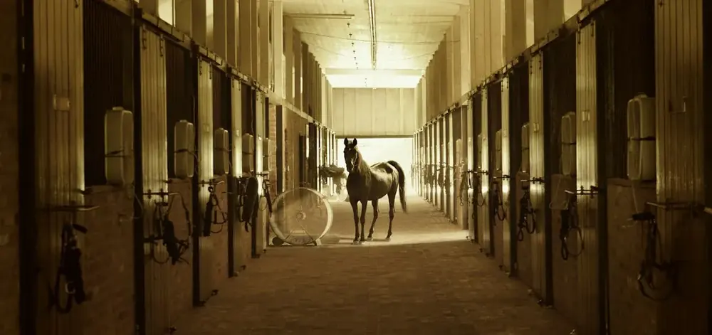
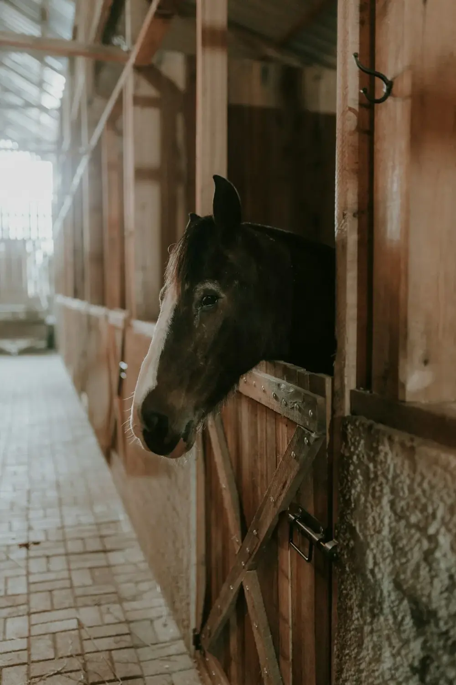
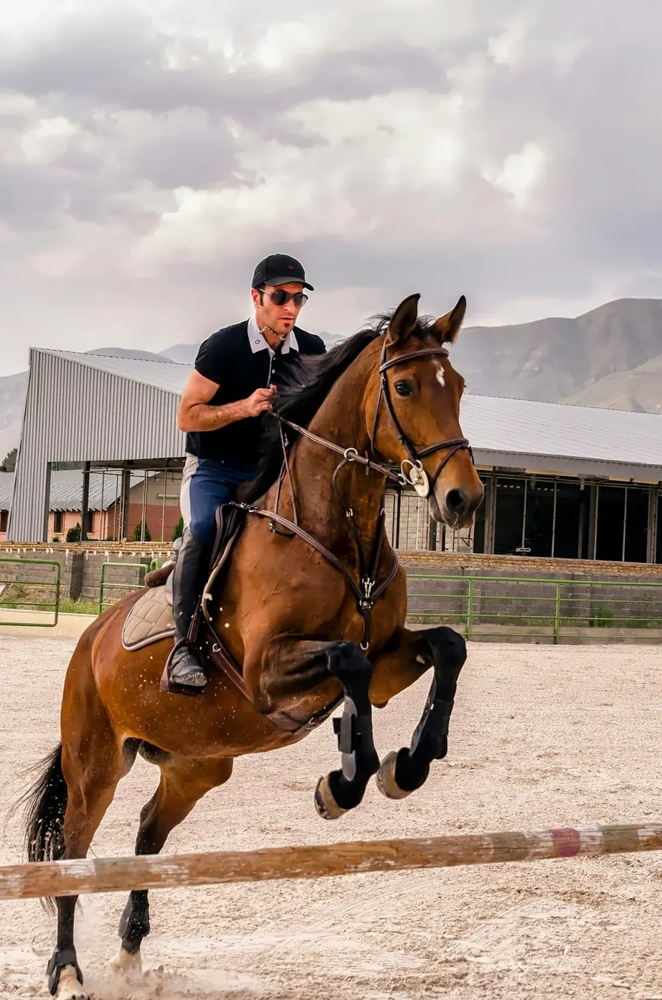

Binnenpiste
Lessen gaan door, ook als het regent of koud is.

Kleine Steylen 12 in Boom, sinds 1969
De Boomse Rij- en Jumpingclub is een vzw met veel paarden, een binnen- en buitenpiste en lesgeefsters die het graag uitleggen. Voor kinderen, jongeren en volwassenen.
Makkelijk bereikbaar, mooi gelegen, en met plaats voor wie net begint en voor wie al jaren rijdt.

Lessen gaan door, ook als het regent of koud is.

Voor de mooie dagen, met ruimte om te springen.

Voor kinderen, tieners en volwassenen. Leren rijden, en leren omgaan met paarden.

Een gezellige bruine kroeg, en een terrasje als de zon schijnt. Ook voor wie gewoon iets wil drinken.
Iedereen begint ergens. Kies wie je bent: je ziet wat je de eerste keer doet, wat je meebrengt en wat je zegt als je Marina belt.
De Boomse Rij- en Jumpingclub Kleine Steile is al sinds 1969 een vzw. Een club waar paarden goed verzorgd worden, waar de jeugd mee mag helpen in de stal, en waar ouders hun kinderen met een gerust hart afzetten.
Na de les blijf je nog even hangen. In het café, op het terras, met de andere ruiters. Zo ontstaan vriendschappen die verder gaan dan de piste.


Professionaliteit met warmte en humor in 'den bak', en gezelligheid troef in het café. Een vriendschappelijke sfeer en veel paarden.Nathan Robertop Google
Zeer lieve uitbaatster met een groot hart voor de dieren, en een nog groter hart voor de vele kinderen die hier les komen nemen.Christel Truijenop Google
Hier kan je leren omgaan en rijden met paarden. Zowel binnen- als buitenpiste. Gezellige cafetaria en terras. Lieve uitbaters.Guy Koeckop Google
Gezellig, leerrijk en vriendelijke lesgeefsters. Veel paarden aanwezig en makkelijk bereikbaar.Marjolijn Duaop Google
Mijn dochter is zo goed bezig. Ze is blij en heeft hier veel vrienden gemaakt.Adam Abou samraop Google
De jeugd krijgt hier veel vrijheid om voor de paarden te zorgen en te genieten van het paardrijden.SD-Wanop Google

Bel voor de lesuren, een eerste kennismaking of al je vragen. Of kom gewoon eens langs voor een drankje.
03 888 36 14 Vraag naar Marina Van Aken"Gezellig, leerrijk en vriendelijke lesgeefsters, veel paarden aanwezig, makkelijk bereikbaar." Marjolijn Dua